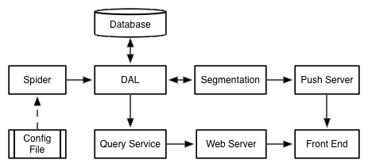
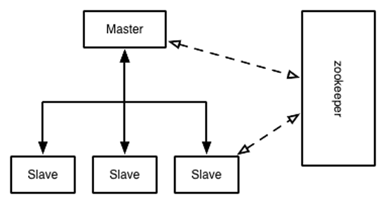
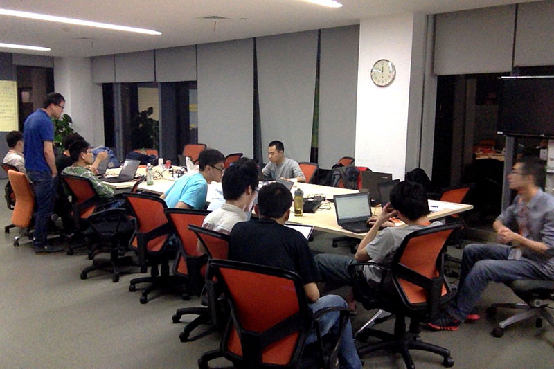

Your browser doesn't support the features required by impress.js, so you are presented with a simplified version of this presentation.
For the best experience please use the latest Chrome, Safari or Firefox browser.
实现功能
高级功能：
-数据抓取
-数据展示
初级功能：
-数据分析
-测试
项目结构
hotword-dal: 数据访问层
hotword-frontend: 前端展示模块
hotword-nodepush: Node.js推送服务
hotword-qatest: 质量保证测试
hotword-queryservice: 查询服务
hotword-segmentation: 分词模块
hotword-spider: 数据抓取模块
hotword-webapp: 前端数据服务
系统架构

数据抓取
- 微博爬虫
- 全量与分量
- 过滤
- tddl数据存储
- zookeeper分布式系统

数据分析
- 分词算法
- 统计
- 执行方式
- 数据存储
数据展示
- No frameworks
- 浏览器兼容
- Ajax交互
- Comet方式推送
- 响应式布局
- 扫码
测试
- JUnit单元测试
- jmeter压力测试
- DOH前端测试
- 安全检测
我们是十四大盗
